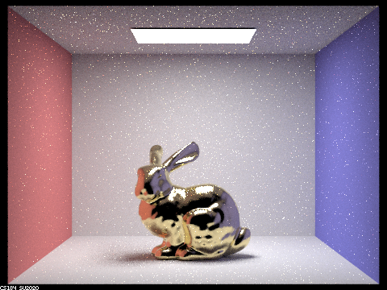

Website Submission Link: https://cal-cs184-student.github.io/sp22-project-webpages-doinksta/proj3-2/index.html
When α is a low value, the dragon’s macrosurface is very smooth, resulting in a very glossy appearance. As α is increased, the dragon’s macrosurface becomes rougher, which makes it appear progressively less glossy.
| α = 0.005 | α = 0.05 | α = 0.25 | α = 0.5 |
When we used cosine hemisphere sampling, the resulting image was much more noisy compared to when we used importance sampling; this is because cosine hemisphere sampling is not as efficient compared to importance sampling.
| Cosine hemisphere sampling | Importance sampling |
We used the values for the gold element.
|  |
In the pinhole camera model, each pixel in the camera sensor can only receive signal from light rays in the direction that passes between the pinhole aperture and the sensor pixel. However, in the thin-lens camera model, light rays that do not directly pass through the center of lens and the sensor pixel can still provide signal to the pixel due to the refractive power of the lens. As a result, some blurring of signal may occur, resulting in depth of field effect.
| Focal distance 4.6 | Focal distance 4.7 | Focal distance 4.8 | Focal distance 4.9 |
| Aperture size 0.1 | Aperture size 0.25 | Aperture size 0.5 | Aperture size 1.23 |